| 固定循环 |
| 循环 | 说明 |
| CYCLE95 | 车削循环 |
| CYCLE951 | 轮廓车削 |
| CYCLE930 | 切槽 |
| CYCLE940 | 退刀槽 |
| CYCLE99 | 螺纹车削 |
| CYCLE98 | 螺纹链 |
| CYCLE92 | 切断 |
CYCLE95车削循环 |
1. 编程
CYSLE95（STRING[140] NPP ,REAL MID,REAL,FALZ,REAL FALX,REAL FAL,REAL FF1,REAL FF2,REAL FF3,INT VARI,REAL DT,
REAL DAM,REAL_VRT,INT_GMODE,INT_DMODE)
2. 参数说明
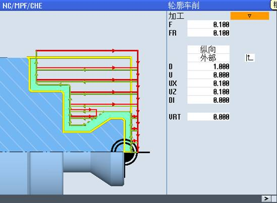
参数 |
说明 |
加工 |
加工方式（粗加工/精加工） |
F |
进给率 |
FR |
底切逼近进给 |
D |
最大切深 |
U |
与轮廓平行的精加工余量 |
UX |
在X的精加工余量 |
UZ |
在Z的精加工余量 |
DI |
在0处连续切削 |
VRT |
0时离开轮廓的自动退刀路径 |
CYCLE951轮廓车削 |
1. 编程
CYCLE951(REAL_SPD,REAL_SPL,REAL_EPD,REAL_EPL,REAL_ZPD,REAL_ZPL,INT_LAGE,REAL_MID,REAL_FALX,
REAL_FALZ,INT_VARI,REAL_RF1,REAL_RF2,REAL_RF3,REAL_SDIS,REAL_FF1,INT_NR,INT_DMODE,INT_AMODE)
2. 功能
使用”切削“循环可以在外轮廓或内轮廓的拐角上进行纵向或横向切削。
3. 参数说明
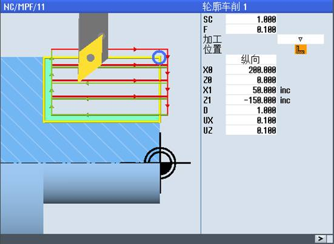
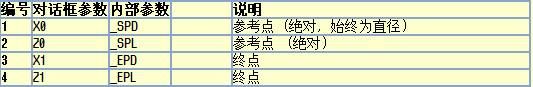
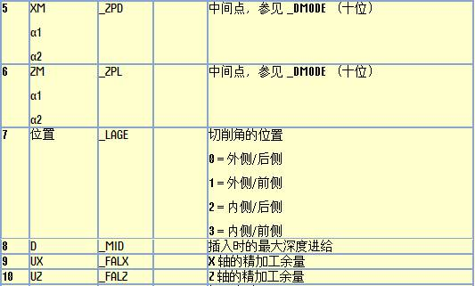
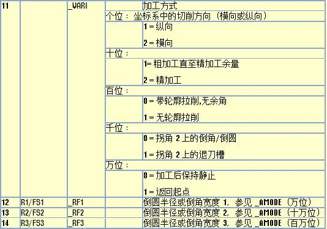
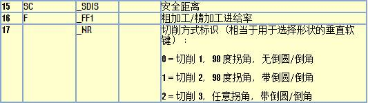
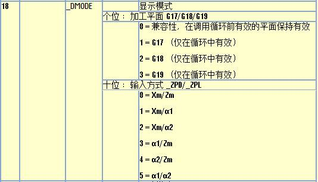
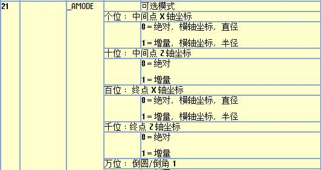
CYCLE930切槽 |
1. 编程
CYCLE930(REAL_SPD,REAL_SPL,REAL_WIDG,REAL_WIDG2,REAL_DIAG,REAL_DIAG2,REAL_STA,REAL_ANG1，REAL_ANG2，REAL_RCO1,REAL_RCI1,REAL_RCI2,REAL_RCO2,REAL_FAL,REAL_IDEP1,REAL_SDIS,INT_VARI,INT_DN,INT_NUM,REAL_DBH,REAL_FF1,
INT_NR,REAL_FALX,REAL_FALZ,INT_DMODE,INT_AMODE)
2. 功能
使用”切槽“循环可以在任意直线轮廓单元上加工对称和不对称的凹槽。
可以沿着纵向和横向加工外退刀槽或内退刀槽。用参数切槽宽度和切槽深度确定切槽形状。如果切槽比有效的刀具宽，则以多步切削宽度。刀具
每次切割时移动刀具宽度的80%（最大）。
可以为切槽底部和边缘指定精加工余量，粗加工时切削至该余量。
在设定数据中确定了切削和回退之间的停留时间。
3. 参数说明
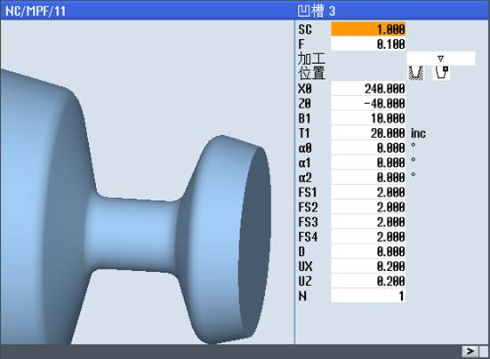
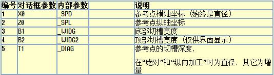
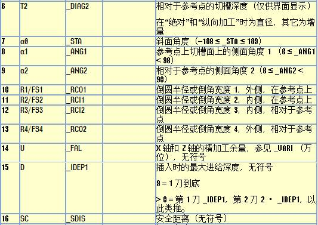
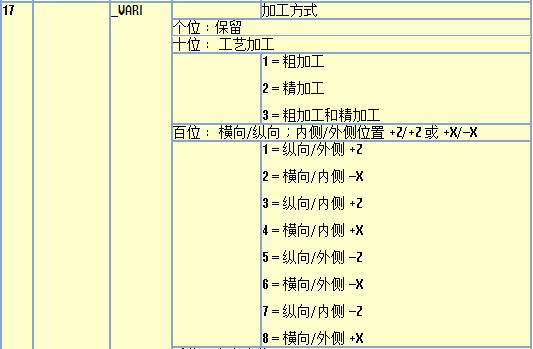
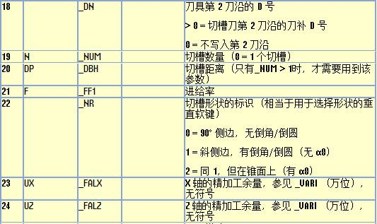
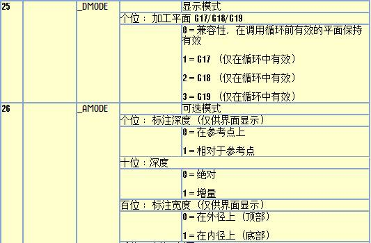
| CYCLE940退刀槽 |
1.编程
CYCLE940(REAL_SPD,REAL_SPL,CHAR_FORM,INT_LAGE,REAL_SDIS,REAL_FFP,INT_VARI,REAL_EPD,REAL_EPL,
REAL_R1,REAL_R2,REAL_STA,REAL_VRT,REAL_MID,REAL_FAL,REAL_FALX,REAL_FALZ,INT_PITI,STRING[5]_PTAB,
STRING[20]_PTABA,INT_DMODE,INT_AMODE)
2. 功能
使用"E"形退刀槽或”F"形退刀槽功能可以车削出符合DIN 509的E形或F形退刀槽。
通过CYCLE940可以写入不同形状的退刀槽，但是，有些退刀槽的编程参数明显不同。
参数表中添加了一列，指出参数适用的退刀槽形状。退刀槽形状标识和循环对话框中的垂直选择软键一一对应。
E:E 形退刀槽
F:F 形退刀槽
A-D:DIN 螺纹退刀槽
T:螺纹退刀槽（形状自由定义）
3. 参数说明
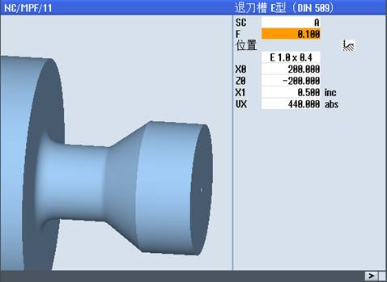
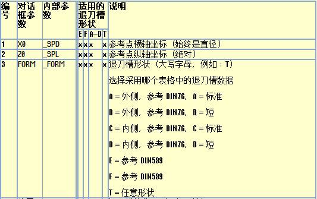
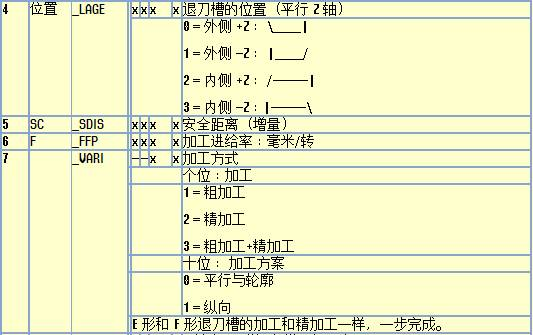
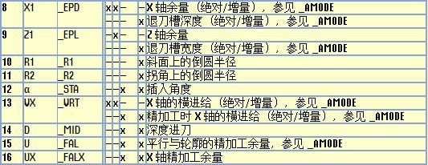
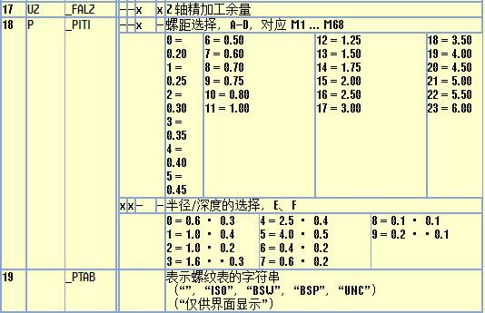
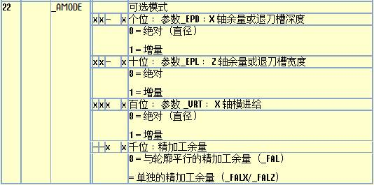
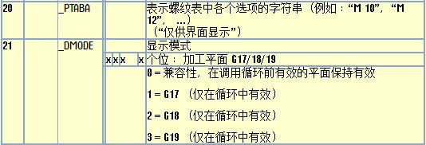
| CYCLE99螺纹车削 |
1. 编程
CYCLE99(REAL_SPL,REAL_SPD,REAL_FPL,REAL_FPD,REAL_APP,REAL_ROP,REAL_TDEP,REAL_FAL,REAL_IANG,REAL_NSP,
INT_NRC,INT_NID,REAL_PIT,INT_VARI,INT_NUMTH,REAL_SDIS,REAL_MID,REAL_GDEP,REAL_PITI,REAL_FDEP,INT_GST,INT_GUD,
REAL_IFLANK,INT_PITA,STRING[15]_PITM,STRING[20]_PTAB,STRING[20]_PTABA,INT_DMODE,INT_AMODE)
2. 功能
使用”纵向螺纹“、”锥形螺纹“、”横向螺纹“循环可以用固定或可变螺距进行外螺纹和内螺纹的车削。
螺纹可以是单头螺纹，也可以说多头螺纹。
加工公制螺纹（螺距P为毫米/转）时，循环使用由螺距所计算出的值对参数螺纹深度H1进行预设置，可以修改该值。
3. 参数说明
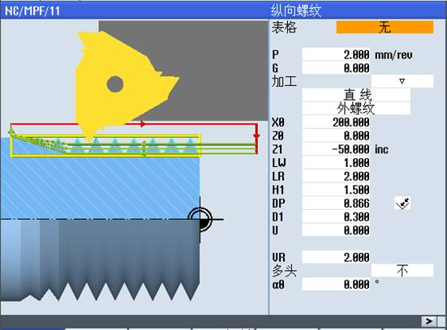
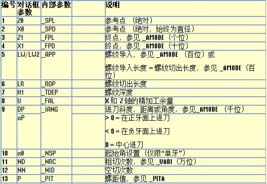
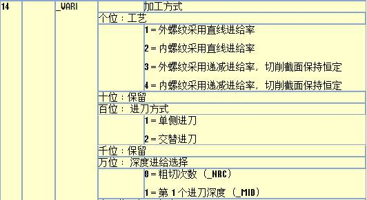
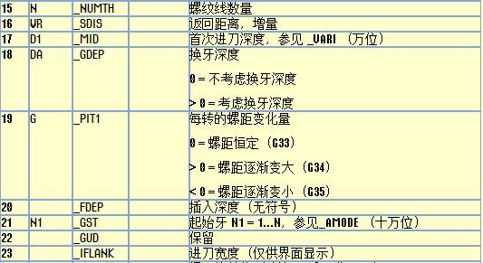
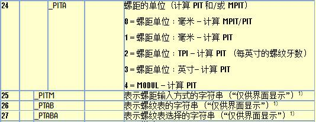
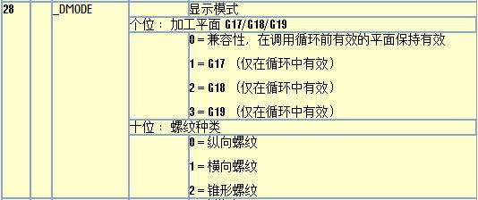
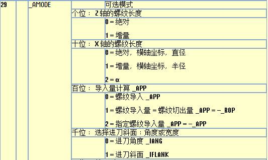
| CYCLE98螺纹链 |
1. 编程
CYCLE98(REAL_PO1,REAL_DM1,REAL_P02,REAL_DM2,REAL_PO3,REAL_DM3,REAL_PO4,REAL_DM4,REAL APP,
REAL ROP,REAL TDEP,REAL FAL,REAL_IANG,REAL NSP,INT NRC,INT NID,REAL_PP1,REAL_PP2,REAL_PP3,
INT_VARI,INT_NUMTH,REAL_VRT,REAL_MID,REAL_GDEP,REAL_IFLANK,INT_PITA,STRING[15]_PITM1,STRING[15]_PITM2,STRING[15]_PITM3,INT_DMODE,INT_AMODE)
2. 功能
用此循环可以加工几个相连的圆柱螺纹或者圆锥螺纹，具有恒定的螺距，在纵向和平面加工，其螺距可以不同。
螺纹可以是单线螺纹，也可以是多线螺纹。对于多头螺纹，依次对各个螺纹线进行加工。
右旋或左旋螺纹由主轴旋转方向和进给方向来决定。
自动以恒定进给深度或恒定切削截面进给。
对于恒定切削深度，切削截面会随切削递增。粗加工后，一次切削切除精加工余量。
在螺纹深度较小时，恒定的进给深度能创造较好的切削条件。
对于恒定切削截面，切削压力对所有粗切削保持不变，进给深度会递减。
3. 参数说明
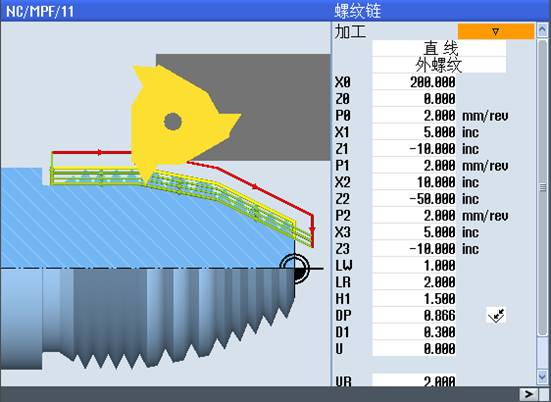
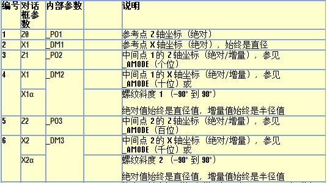
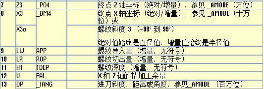
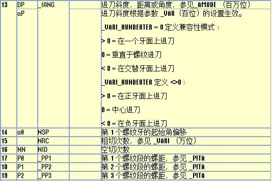
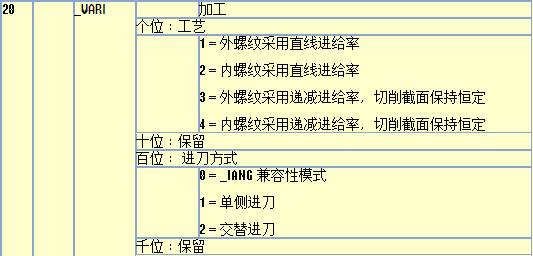
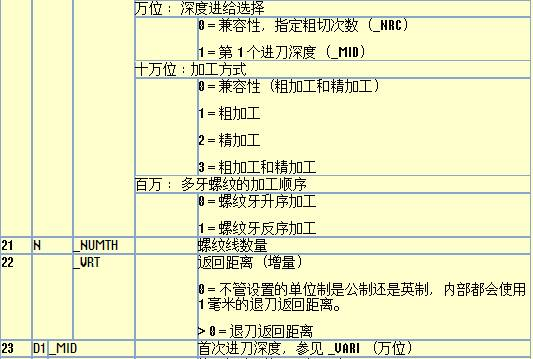
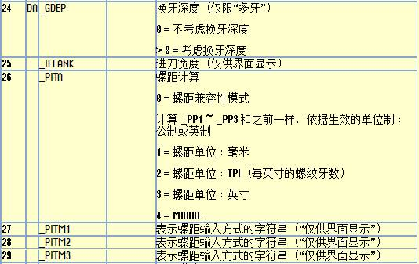
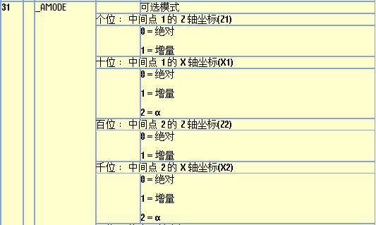
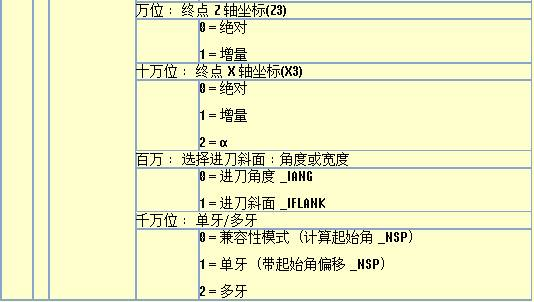
| CYCLE92切断 |
1. 编程
CYCLE92(REAL_SPD,REAL_SPL,REAL_DIAG1,REAL_DIAG2,REAL_RC,REAL_SDIS,REAL_SV1,REAL_SV2,
INT_SDAC,REAL_FF1,REAL_FF2,REAL_SS2,REAL_DIAGM,INT_VARI,INT_DN,INT_DMODE,INT_AMODE)
2. 功能
如果要切断旋转对称的零件，可以使用切断循环。
可以在被加工零件的边缘上编程倒角或倒圆。可以恒定切削速率V或旋转速度S加工深度X1，然后再只以恒定速度加工工件。也可以从深度X1编写降低的
进给率FR或降低的旋转速度SR，以便使速度适应减小的直径。
用参数X2输入您希望通过切断所到达的最后深度。比如空心体，不需要完全切到中心，而是略超过空心体的壁厚就可以切断了。
3. 参数说明
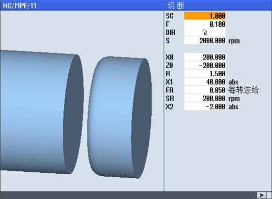
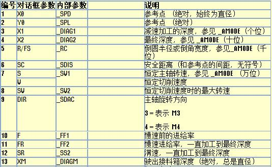
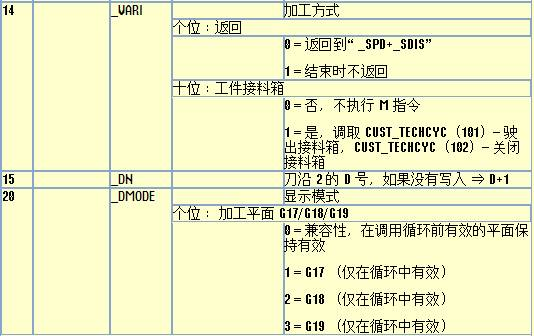
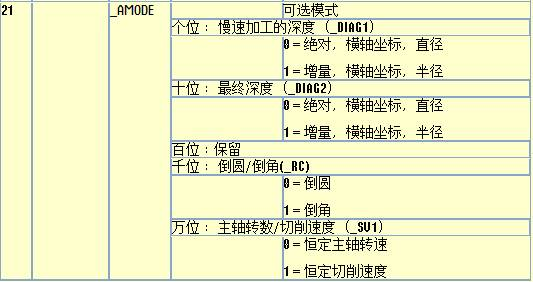